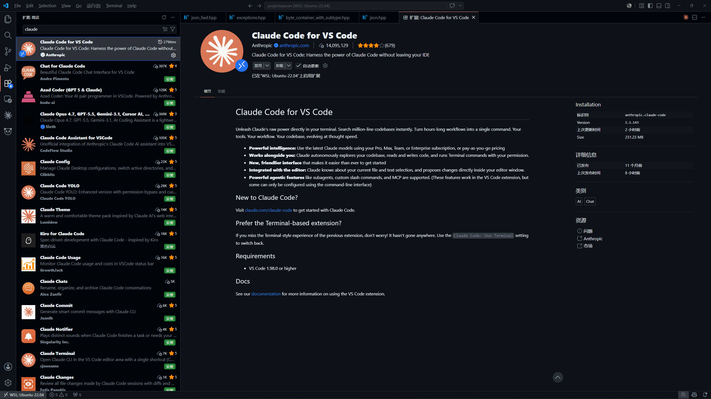
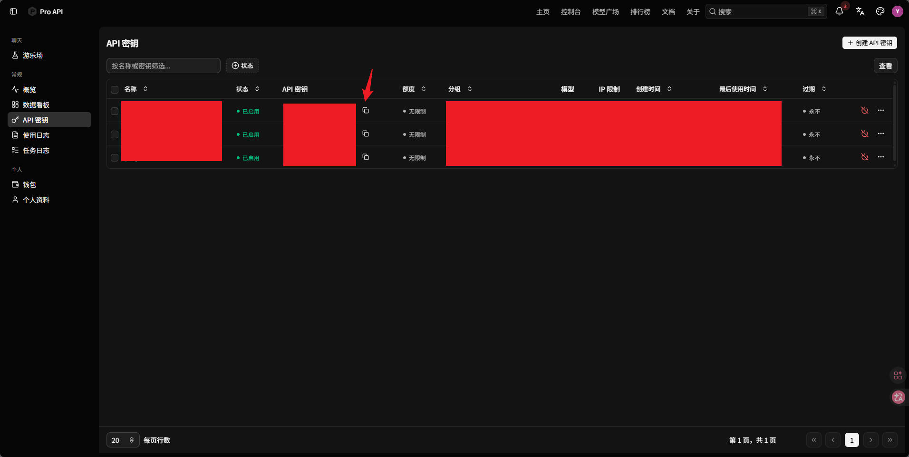
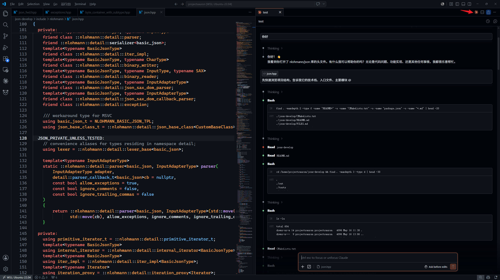

VS Code配置Claude Code（通过API方式）
一、前置下载
首先在VS Code中下载扩展 Claude Code for VS Code：

Claude Code 在 Windows 上依赖 Git Bash，必须先安装 Git。
下载地址： https://git-scm.com/install/windows
二、通过API平台获取API
由于没有海外信用卡，无法直接使用 Anthropic 官方 API，可以使用国内中转平台。
在平台上添加好令牌后复制API密钥，并在模型广场中找到要使用的模型，并记住名称。

三、VS Code 配置
在 VS Code 中按下 Ctrl + Shift + P，搜索 Open User Settings(JSON) 打开配置文件，添加一下内容：
1 | |
四、验证
保存 settings.json 后，重启 VS Code。
点击右上角的火花按钮即可打开 Claude Code 面板，看到正常回复说明配置成功。

VS Code配置Claude Code（通过API方式）
http://example.com/2026/05/15/VS-Code配置Claude-Code（通过API方式）/